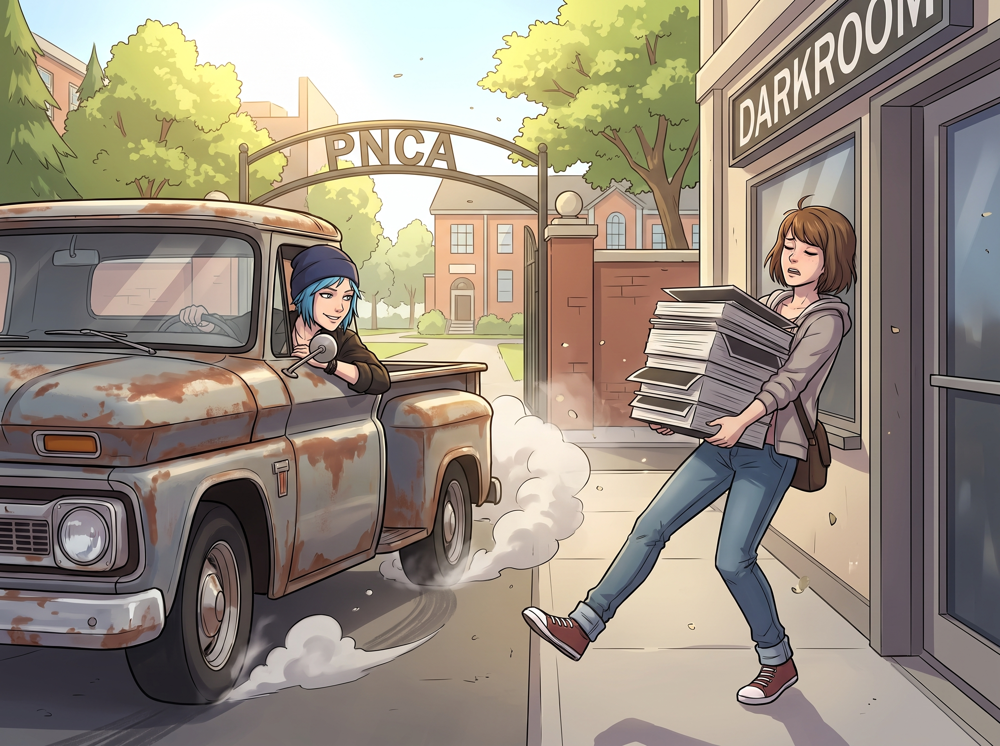

傍晚六點半

升入大學後，四人雖然同住在波特蘭的 Loft 基地，但白天的軌跡卻走向了風格迥異的四個方向——Chloe 在波特蘭社區學院的車間裡跟 V8 發動機較勁，指尖永遠沾著洗不掉的機油；Max 泡在 PNCA 的暗房和評圖教室裡，跟顯影液和「時間與記憶」的敘事概念打交道；Victoria 穿梭在西雅圖與波特蘭之間，用三句話就能把同組同學的商業計劃書批得體無完膚；Kate 則窩在附屬心理諮詢中心，用畫筆和園藝，一點一點打開那些受創孩子緊閉的心房。
每到傍晚六點半，這四條軌跡總會重新收攏。
一、接上 Max
老皮卡的引擎轟鳴著駛進 PNCA 校門口，Chloe 一個利落的甩尾停靠在路邊，搖下車窗，正好看見 Max 抱著一疊大畫幅底片盒，深一腳淺一腳地從暗房大樓走出來。
「今天的評圖怎麼樣，長官？」Chloe 探出頭，挑眉問道。
「還行，」Max 把底片盒小心翼翼地放進後座，臉上帶著一絲難掩的滿足，「導師說我這組『城市裂痕』的系列，敘事張力比上次進步不少。」她頓了頓，補了一句，「而且我這次全程沒有結巴。」
「那必須慶祝，」Chloe 咧嘴一笑，一把攬過她的肩膀，「今晚給妳加雙倍培根。」
二、接上 Kate
車子拐進附屬心理諮詢中心的接送區，Kate 已經抱著一小盒孩子們送的蠟筆畫，笑盈盈地站在門口等著。
「今天那個小男孩終於願意開口說話了，」她一坐上車，就迫不及待地分享，語氣裡帶著藏不住的欣慰，「他畫了一整幅溫室的畫，說想跟我一起種番茄。」
「妳這行的成就感，」Max 從前座轉過頭，由衷地感嘆，「聽起來比我拍照踏實多了。」
「才不會，」Kate 溫柔地搖搖頭，把那盒蠟筆畫小心放進包裡，「你們每個人做的事，都很重要。」
三、匯合 Victoria
車子最後停在 Loft 樓下，正好看見剛停好保時捷的 Victoria，踩著尖頭高跟鞋，一手揉著發脹的太陽穴，一手拎著鼓鼓囊囊的公事包朝這邊走來。
「今天又是被哪個蠢學生的商業計劃書氣到了？」Chloe 隔著車窗喊道。
「別提了，」Victoria 沒好氣地翻了個白眼，拉開車門一屁股坐進副駕駛，「有個大二的男生，居然拿著一份完全沒做過市場調研的方案，就想找我談贊助。我當場問了他三個問題，他一個都答不上來，最後灰溜溜地跑了。」
「妳這是校園惡霸行徑，」Chloe 大笑著發動引擎，「難怪學生會的人看到妳都繞道走。」
「那叫商業嗅覺，」Victoria 傲然地揚起下巴，語氣裡帶著一絲毫不掩飾的疲憊，「不過說真的，今天這一天，累得我現在只想癱在沙發上，什麼都不想幹。」
四、樓梯上的抱怨大會
四人一邊抱怨著各自教授出的奇葩作業，一邊熱熱鬧鬧地踩著木樓梯往樓上走。
「我們教授要求下週交一份完整的懸吊系統受力分析報告，」Chloe 咕噥著，「老娘寧願直接把整台車拆了重裝，也不想寫那種八頁紙的理論廢話。」
「我倒還好，」Max 笑著接話，「只是下週要交十二張大畫幅底片的完整作品集，暗房裡的日子怕是要更難熬了。」
「我這邊，」Kate 溫聲說道，「下週要帶那個小男孩去參加他人生第一次的團體遊戲治療，說實話，比寫論文還讓我緊張。」
「妳們都還算輕鬆，」Victoria 揉著發疼的後頸，語氣裡帶著誇張的哀怨，「我這週要同時處理三份併購合約的盡職調查報告，還得抽空去見那個煩人的畫廊房東。」
「行吧行吧，」Chloe 推開 Loft 的大門，率先走了進去，身後傳來一陣此起彼落的抱怨與笑聲，「反正大家都是為了苟活到週末，那今晚——誰負責做飯？」
「輪到妳了，Price。」三個人異口同聲地回答。
「……去他的民主投票。」
夕陽的餘暉透過挑高的落地窗，灑滿了整間堆滿了機油工具、黑白底片、精緻套裝與草本花茶的 Loft，四個人卸下了白天各自扮演的角色，重新變回了那個只屬於彼此的、吵吵鬧鬧的小家。